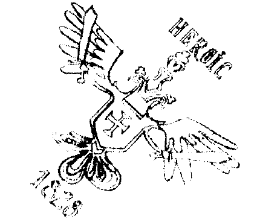

Güçlü bir ihtimale göre 2004, daha zayıf başka bir ihtimale göre de 2005 yılında basıldığı müphem bir rivayet halinde birkaç kitap düşkünü ve sahaf arasında dolaşan, kendisini dünya gözüyle görmeyen milyonlarca insanın bittabi hiç umursamadığı Kitab-ı Duvduvani adlı “naif, postmodem ve gelenekçi” eseri ele geçirmek, hem de umulmadık bir şekilde ele geçirmek “kitap ve sanatperverân-ı zaman”dan Feride Sue Hanım’ı olmadık heyecanlara boğmuştu. Teşvikiye caddesinden yukarı, Nişantaşı’nın nişantaşlarından birine doğru müteharrik bir bilinç yumağı suretinde hızlı hızlı yürürken, akşamın bastırışına ve koyu laciverdi tonların ortalığı velveleye verişine hafiften içerliyor, heyecanlandığında o müheykel ve muhteşem simasına gizemli anlamlar katan pembelikler ibadullah tarafından görülemiyor diye alenen hayıflanıyordu. Keşke tanıdık birine, tercihan hemcinslerinden bir dosta rastlasa da çılgın beyaz ışıklarıyla etrafını nura gark eden mücevhercilerden birinin önünde dursaydı!
Başka zaman olsa bu masum arzusunu gerçekleştirmek için biraz ayak sürür, sallanır, nihayet bu güzide muhitimizin manken endamlı, uzun paltolu, kalkık burunlu, burnu kalkık çizmeli, saçları röfleli sakinelerinden birine denk gelirdi. Ama Feride Sue Hanım’ın içindeki heyecan, dışarı vuran pembeliklerle kıyas kabul etmez derecede büyük olduğu için bu çocukça arzularından çabuk sıyrıldı. Taşın hemen yanında bir taksi durdurdu. Narin vücudunu nadide bir çiçeği vazoya yerleştirircesine bir zarâfetle arka koltuğa bırakırken verdiği nefeste “Millenium Residence” sözleri de olmalıydı ki, altı dakika sonra şoförün “buyrun” dediğini duydu. Buna da ayrıca sevindi. Bazen yılların verdiği alışkanlıkla “Fulya” diyor, duruma aydığı zaman ise ufak bir kriz yaşamadan toparlanamıyordu.
Gökdelenin önünde müheyyâ duran ve gıcır amiral üniforması içinde cidden pek yakışıklı olan Satılmış’ın kapıyı açmasını filan beklemeden kendini dışarı attı. Sevgili Kitab-ı Duvduvani'sini göğsünde çapraz tuttuğu fildişi kollarının, herhalde pek keyifli olan tüyden cenderesine almış, bir dönem Mavikavak sinemasının o çok tipik liseli kız havasında ve zavallı Satılmış’ın bütün gün beklediği bir “n‘aber"i bile delikanlıdan esirgeyerek, akıl kumkuması binanın girişine yöneldi. Parmak izini kimlik tarayıcısına okutarak içeri girdi. Tek numaralı daireler asansörünün önünde beklemeye başladı. Lanet şey taa doksanbirinci kattan gelecekti. Sabırsızlıkla incecik bir turunç sigarası yaktı. Arkasından gelen,
“Aşkolsun Feride Hanım yine mi asansörde sigara içiyorsunuz?” diyen yapmacık sitemli ve aksanlı sese ise, bir ayçiçeği tekerleği güneşe nasıl dönerse öyle dönerek tepki verdi. Şu anda çıtı pıtı bir Avrupa, yani naçizane Feride Sue, bakırdan dökülmüş bir estetik harikasına, bu pek görkemli Asya heykeline dönmüştü. Bu ses... Bu ses... Kitab-ı Duvduvani’yi bile bir an için silen bu revnaklı, bu boğuk ses... Sigarasını yere atarak pembe mermerin üstünde ezdi. Boğuk ses daha da kızgındı;
“Feride Hanım... Aşkolsun... Hani bu sanal saraya matbu kitap getirilmeyecekti?"
Zeytin rengi, hafif maviye çalan saçlar, doğu çınarı gibi bir boy, bakır kızıllığında bir ten, yırtıcı bir burun, koyu yeşil vahşi gözler... Feride Hanım’ın “müşehhas ve mücessem Asya’sı,” Tepeden tırnağa Hindistan. Biraz Golkonda, biraz Dekkan.
“Ha... haklısınız Sindhia Bey... Özür dilerim. Biraz önce bir müzayededen Duvduvani Efendi’yi aldım da... Çok sevinçliyim...” Delikanlının soran bakışları ile kendine geldi. Ayaküstü Kitab-ı Duvduvani’yi “Asya”ya nasıl anlatırsın?
